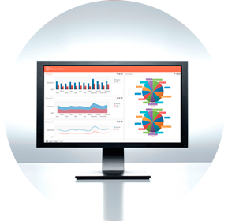

Bienvenido
Esto es un blog personal sobre Business Intelligence.
El blog se llama “Business Intelligence fácil” porque considero que las soluciones de BI deberían ser más fáciles de usar de lo que son. Si decides quedarte, verás que es un tema recurrente en este sitio.
Últimos artículos
¿Qué son los storyboards?
¿Qué son los storyboards? ¿En qué se diferencian de los tradicionales dashboards?
LEERTipos de Business Intelligence
Business Intelligence es un concepto muy amplio que incluye diferentes tipos de soluciones. En este artículo vemos los distintos tipos de BI existentes.
LEERVuelvo
He dejado abandonado este blog demasiado tiempo. Han pasado más de 2 años desde el último artículo. Ni unas míseras líneas para felicitar las navidades o el año nuevo. Tengo muchas cosas que contaros y quiero hacerlo.
LEERCargar las dimensiones de un data warehouse
Comparativa con ejemplos de la carga de una dimension Tipo 1. Si existe algún registro nuevo, lo añadiremos. Si algún registro ha cambiado, lo actualizaremos. 300 líneas de código pero con buen humor.
LEERLecturas BI recomendadas (Sant Jordi 2017)
Para este Sant jordi, si te dedicas al Business Intelligence, te recomendamos estas lecturas imprescindibles.
LEERPor dónde empezar
Los artículos están clasificados por meses y por categorías. Tal vez quieras dar un vistazo al blog navegando entre los distintos artículos. Lee lo que te interese y comenta si quieres.
También puedes utilizar el cuadro de búsqueda del margen superior. Si aún así no encuentras lo que buscas, acude a nuestro flamante nuevo foro de BI para exponer tu cuestión u opinión:
Sobre Crono
CRONO es un software asequible y fácil de usar para construir informes, cuadros de mando, y hojas Excel. Puedes leer más sobre CRONO y descargarte la versión de evaluación en la página de este software de Business Intelligence. Intentaré no aburriros con nuestras batallitas ni exagerar sobre sus bondades pero inevitablemente hablaré de Crono en este blog personal. Si en alguna ocasión hablo en exceso sobre Crono, hacédmelo saber, que tampoco quiero aburriros :-)
 LEERSuscríbete
Si te gusta el Business Intelligence y quieres mantenerte informado, suscríbete para recibir las actualizaciones de este sitio.
¡SÍ, QUIERO!Sobre mi
Soy Pau, consultor BI, autor de este blog, programador y socio de Crono. Tengo la suerte de que me gusta lo que hago y encima me pagan por ello.
LEER